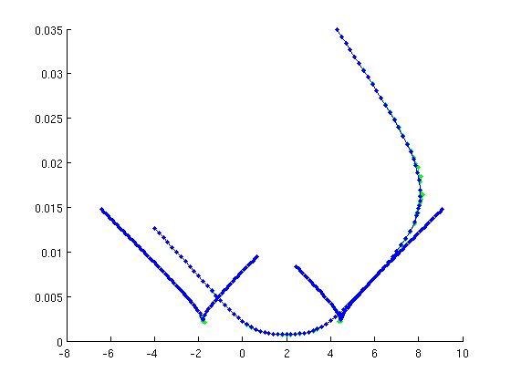
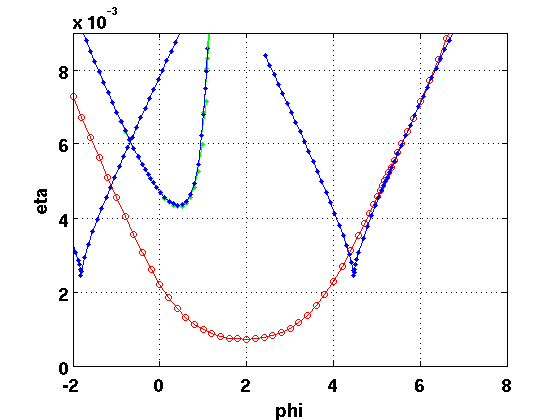

Demo of extension for rotational symmetry using Lang-Kobayashi equations
The equation (modelling a laser subject to delayed coherent optical feedback) is given as
The main bifurcation parameters will be  and .
and .
Warning The functions for the extended systems determining relative equilibria (rotating waves) and relative periodic orbits (modulated waves), do not have support for user-provided system derivatves or state-dependent delays!
% (c) DDE-BIFTOOL v. 3.1.1(20), 11/04/2014
Contents
- Load DDE-Biftool and extension into Path
- Problem definition using set_rotfuncs
- Initial values of parameters and parameter indices
- Right-hand side and call to set_rotfuncs
- Extended functions in rotating coordinates for rotating waves
- Initial guess
- Relative equilibria varying phase phi of the delayed feedback
- Linear Stability of relative equilibria
- Modulated waves (Relative periodic orbits, RPOs)
- RPOs branching off at 2nd Hopf of REs
- Stability of RPOs
- Plot of "phase portraits" of relative periodic orbits
- Continuation of fold of relative equilibria
- Continuation of 2nd fold of relative equilibria
- Continuation of Hopf bifurcations of relative equilibria
- Plot all bifurcations of relative equilibria
- Period doubling of relative POs
- Stability of orbits at the period doubling
- Fold of relative POs
- Stability of orbits at fold of RPOs
- re-plot all bifurcations
Load DDE-Biftool and extension into Path
clear addpath('../../ddebiftool/',... '../../ddebiftool_extra_psol/',... '../../ddebiftool_utilities/',... '../../ddebiftool_extra_rotsym');
Problem definition using set_rotfuncs
In addition to the user-defined functions set_rotfuncs needs the matrix A generating the rotation and (optional) the rotation as a function  . Then the system is assumed to have rotational symmetry where A is anti-symmetric.
. Then the system is assumed to have rotational symmetry where A is anti-symmetric.
A=[0,-1,0; 1,0,0; 0,0,0]; expA=@(phi) [cos(phi), -sin(phi),0; sin(phi), cos(phi),0; 0,0,1];
Initial values of parameters and parameter indices
alpha=4; % alpha factor pump=0.1; % injection current epsilon=5e-3; % carrier relaxation time eta=5e-3; % feedback strength phi0=0; % feedback phase tau0=100; % initial delay par=[pump,eta,phi0,tau0,alpha,epsilon]; % indices ndim=3; ind_pump=1; ind_eta=2; ind_phi=3; ind_tau=4; ind_omega=length(par)+1;
Right-hand side and call to set_rotfuncs
f=@(x,p)LangKobayashi(x(1,1,:)+1i*x(2,1,:),x(1,2,:)+1i*x(2,2,:),x(3,1,:),... p(5),p(ind_pump),p(ind_eta),p(ind_phi),p(6)); rfuncs=set_rotfuncs('sys_rhs',f,'rotation',A,'exp_rotation',expA,... 'sys_tau',@()ind_tau,'x_vectorized',true);
Extended functions in rotating coordinates for rotating waves
A rotating wave (relative equilibrium, RE) is a solution of the form
The extended functions in rfuncs will always treat the user-provided system in rotating coordinates.
Original system (by user):
Rotating coordinates: :
The rotation speed is chosen such that the rotating wave is turned into an equilibrium . This is achieved by solving for equilibria of the equation and adding a sys_cond (file rot_cond.m) to povide an equation determining . For rotating waves this is
As DDE-Biftool does not give the user's sys_cond access to reference points, rot_cond returns residual 0 and Jacobian .
Initial guess
The extension for rotating and modulated waves is not able to cope with invariant equilibria. Thus, we generate a non-trivial rotating wave as our initial guess. For the laser the rotating waves correspond to stationary lasing (on state) , .
[E0,n0,phi0,omega0]=LK_init(alpha,pump,eta,tau0);
par(ind_phi)=phi0;
par(ind_omega)=omega0;
opt_inputs={'extra_condition',1,'print_residual_info',0};
Relative equilibria varying phase phi of the delayed feedback
The standard convenience function SetupStst works, but one must add the continuation parameter index length(parameter) to the index list of continuation parameters.
Warning DDE-Biftool assumes that the rotation speed is the last parameter in the parameter vector!
rw_phas=SetupStst(rfuncs,'contpar',[ind_phi,ind_omega],'corpar',ind_omega,... 'x',[E0;n0],'parameter',par,opt_inputs{:},... 'max_step',[ind_phi,0.2]); figure(2);clf rw_phas=br_contn(rfuncs,rw_phas,200);
Linear Stability of relative equilibria
The standard convenience function GetStability works. However, all relative equilibria have a trivial eigenvalue 0, corresponding to phase shift. If is a relative equilibrium (with rotation speed ) then is also a relative equilibrium with the same rotation speed . One can adapt GetStability by setting the optional flag exclude_trivial to true and providing a function for locating the trivial eigenvalue: 'locate_trivial',@(p)0.
[rw_phas_nunst,dom,defect,rw_phas.point]=GetStability(rw_phas,... 'exclude_trivial',true,'locate_trivial',@(p)0,'funcs',rfuncs); % plot with stability information p2=arrayfun(@(p)p.parameter(ind_phi),rw_phas.point); A2=arrayfun(@(p)norm(p.x(1:2)),rw_phas.point); n2=arrayfun(@(p)norm(p.x(3)),rw_phas.point); om2=arrayfun(@(p)p.parameter(ind_omega),rw_phas.point); figure(1);clf tdeco={'fontsize',14,'fontweight','bold'}; sel=@(x,i)x(rw_phas_nunst==i); plot(sel(p2,0),sel(A2,0),'k.',sel(p2,1),sel(A2,1),'r.',... sel(p2,2),sel(A2,2),'c.',sel(p2,3),sel(A2,3),'b.','linewidth',2); % detect Hopf bifurcations ind_hopf=find(abs(diff(rw_phas_nunst))==2); hold on plot(p2(ind_hopf),A2(ind_hopf),'ks','linewidth',2); hold off set(gca,tdeco{:}); xlabel('phi',tdeco{:}); ylabel('|E|',tdeco{:});
Modulated waves (Relative periodic orbits, RPOs)
Modulated waves are solutions of the form
where for all and some period . That is,  is quasi-periodic, but can be turned into a periodic solution in rotating coordinates. The transformation to rotating coordinates is the same as for relative equilibria, but the additional condition (rot_cond) is
is quasi-periodic, but can be turned into a periodic solution in rotating coordinates. The transformation to rotating coordinates is the same as for relative equilibria, but the additional condition (rot_cond) is
where is a reference solution. Since DDE-Biftool does not give access to reference solutions in user-defined conditions, rot_cond returns residual 0 and Jacobian .
RPOs branching off at 2nd Hopf of REs
The initialization works with the standard routine. Again, the rotation speed needs to be added to the list of continuation parameters.
[rw_phas_per,suc]=SetupPsol(rfuncs,rw_phas,ind_hopf(2),opt_inputs{:},...
'max_step',[ind_phi,0.1],'print_residual_info',1,'radius',0.02);
if ~suc
error('Hopf initialization failed');
end
figure(2);clf
rw_phas_per=br_contn(rfuncs,rw_phas_per,120);
it=1, res=0.000477416 it=2, res=3.6662e-06 it=3, res=5.22068e-10 it=1, res=0.0221118 it=2, res=1.03329e-05 it=3, res=1.89367e-10 it=1, res=5.30159e-05 it=2, res=8.06852e-12 it=1, res=0.0588672 it=2, res=0.00783925 it=3, res=0.000225981 it=4, res=1.17327e-07 it=5, res=1.68753e-11 it=1, res=0.0150051 it=2, res=0.000562676 it=3, res=8.21825e-07 it=4, res=3.38499e-11 it=1, res=6.52136e-05 it=2, res=5.3547e-11 it=1, res=0.0114482 ...
Stability of RPOs
Similar to REs, the RPOs have an additional trivial Floquet multiplier 1. That is, overall, RPOs have always a double Floquet multiplier 1. To exclude the two Floquet mulitpliers closest to unity from the stability, set the optional flag 'exclude_trivial' to true and provide for the optional argument 'locate_trivial' the function @(p)[1,1].
[rw_phas_per_nunst,dom_per,defect,rw_phas_per.point]=GetStability(rw_phas_per,... 'exclude_trivial',true,'locate_trivial',@(p)[1,1],'funcs',rfuncs); % plot with stability info pp=arrayfun(@(p)p.parameter(ind_phi),rw_phas_per.point); Epow=@(x)sqrt(sum(x(1:2,:).^2,1)); Apmx=arrayfun(@(p)max(Epow(p.profile)),rw_phas_per.point); Apmn=arrayfun(@(p)min(Epow(p.profile)),rw_phas_per.point); figure(1);hold on sel=@(x,i)x(rw_phas_per_nunst==i); plot(sel(pp,0),[sel(Apmx,0);sel(Apmn,0)],'ko',... sel(pp,1),[sel(Apmx,1);sel(Apmn,1)],'ro'); axis tight
Plot of "phase portraits" of relative periodic orbits
figure(2);clf;hold on for i=1:length(rw_phas_per.point) plot(Epow(rw_phas_per.point(i).profile),rw_phas_per.point(i).profile(3,:),'.-'); end hold off grid on axis tight set(gca,tdeco{:}); xlabel('n',tdeco{:}); ylabel('|E|',tdeco{:});
Continuation of fold of relative equilibria
The functions for the extended system are generated by SetupRWFold. The standard routine SetupPOfold has to be modified because the extended condition rot_cond has to be applied to the derivative, too. Also the rotation speed needs to be added to the list of continuation parameters. The extended system for fold continuation of REs has one additional artificial continuation parameter.
ind_fold=find(abs(diff(rw_phas_nunst))==1); [foldfuncs,fold1branch,suc]=SetupRWFold(rfuncs,rw_phas,ind_fold(1),... 'contpar',[ind_phi,ind_eta,ind_omega],opt_inputs{:},... 'print_residual_info',1,'dir',ind_eta,'step',1e-4,... 'max_step',[ind_phi,0.1; ind_eta,0.01]); % figure(2);clf fold1branch=br_contn(foldfuncs,fold1branch,40); fold1branch=br_rvers(fold1branch); fold1branch=br_contn(foldfuncs,fold1branch,40);
it=1, res=0.000227057 it=2, res=1.89309e-07 it=3, res=7.55566e-13 it=1, res=0.00295185 it=2, res=3.1161e-05 it=3, res=1.17747e-09 it=4, res=1.48714e-13 it=1, res=0.000121684 it=2, res=4.67372e-08 it=3, res=1.17521e-12 it=1, res=0.000167978 it=2, res=7.92878e-08 it=3, res=2.02029e-12 it=1, res=0.000230893 it=2, res=1.32172e-07 it=3, res=3.39468e-12 it=1, res=0.000316131 it=2, res=2.15835e-07 it=3, res=5.57805e-12 it=1, res=0.00043142 ...
Continuation of 2nd fold of relative equilibria
[foldfuncs,fold2branch,suc]=SetupRWFold(rfuncs,rw_phas,ind_fold(2),... 'contpar',[ind_phi,ind_eta,ind_omega],opt_inputs{:},... 'print_residual_info',1,'dir',ind_eta,'step',1e-4,... 'max_step',[ind_phi,0.1; ind_eta,0.01]); fold2branch=br_contn(foldfuncs,fold2branch,40); fold2branch=br_rvers(fold2branch); fold2branch=br_contn(foldfuncs,fold2branch,40);
it=1, res=0.0015423 it=2, res=6.08298e-06 it=3, res=8.11908e-11 it=1, res=0.00260918 it=2, res=1.77492e-05 it=3, res=1.04899e-09 it=4, res=1.27337e-13 it=1, res=8.39014e-05 it=2, res=3.18751e-08 it=3, res=7.03865e-13 it=1, res=0.000113958 it=2, res=5.685e-08 it=3, res=1.16332e-12 it=1, res=0.000153584 it=2, res=9.80475e-08 it=3, res=1.85983e-12 it=1, res=0.000205308 it=2, res=1.63672e-07 it=3, res=2.86437e-12 it=1, res=0.000272155 ...
Continuation of Hopf bifurcations of relative equilibria
For Hopf bifurcation continuation the standard routine SetupHopf works without modification (SetupRWHopf is a simple wrapper).
[h1branch,suc]=SetupRWHopf(rfuncs,rw_phas,ind_hopf(1),... 'contpar',[ind_phi,ind_eta,ind_omega],opt_inputs{:},... 'print_residual_info',1,'dir',ind_eta,'step',1e-4,'minimal_accuracy',1e-4); h1branch=br_contn(rfuncs,h1branch,50); h1branch=br_rvers(h1branch); h1branch=br_contn(rfuncs,h1branch,50);
it=1, res=0.000130178 it=2, res=3.07845e-07 it=3, res=1.14108e-11 it=1, res=0.000104569 it=2, res=2.39606e-07 it=3, res=4.63018e-12 it=1, res=1.05922e-06 it=2, res=1.9842e-10 it=3, res=6.53449e-13 it=1, res=1.51752e-06 it=2, res=4.03755e-10 it=3, res=5.98634e-13 it=1, res=2.18395e-06 it=2, res=8.18019e-10 it=3, res=4.11993e-13 it=1, res=3.15694e-06 it=2, res=1.65164e-09 it=3, res=1.01893e-12 it=1, res=4.59929e-06 it=2, res=3.32749e-09 ...
Plot all bifurcations of relative equilibria
getpar=@(ip,br)arrayfun(@(x)x.parameter(ip),br.point); ph=getpar(ind_phi,h1branch); eh=getpar(ind_eta,h1branch); pf=getpar(ind_phi,fold1branch); ef=getpar(ind_eta,fold1branch); pf2=getpar(ind_phi,fold2branch); ef2=getpar(ind_eta,fold2branch); figure(2);clf plot(ph,eh,'ro-', pf,ef,'b.-', pf2,ef2,'b.-'); axis([-2,8,0,0.009]); grid on set(gca,tdeco{:}); xlabel('phi',tdeco{:}); ylabel('eta',tdeco{:});
Period doubling of relative POs
The standard initialization works (wrapped to give it sensible name). The rotation speed needs to be added to the list of continuation parameters.
ind_pd=find(diff(rw_phas_per_nunst)==1&dom_per(1:end-1)<0); [pdfuncs,pdbr]=SetupMWPeriodDoubling(rfuncs,rw_phas_per,ind_pd,... 'contpar',[ind_phi,ind_eta,ind_omega],opt_inputs{:},... 'print_residual_info',1,'dir',ind_eta,'step',1e-4);
it=1, res=0.544434 it=2, res=0.0117503 it=3, res=7.96708e-06 it=4, res=6.67635e-11 it=1, res=0.021419 it=2, res=6.5234e-09 it=1, res=0.154902 it=2, res=0.00731031 it=3, res=8.8049e-06 it=4, res=9.55255e-10 it=1, res=0.00387263 it=2, res=8.19995e-10
figure(2); pdbr=br_contn(pdfuncs,pdbr,20); pdbr=br_rvers(pdbr); pdbr=br_contn(pdfuncs,pdbr,20);
it=1, res=0.0201666 it=2, res=3.31718e-05 it=3, res=6.2154e-10 it=1, res=0.0253107 it=2, res=5.9337e-05 it=3, res=1.20822e-09 it=1, res=0.0100943 it=2, res=2.36606e-09 it=1, res=0.0351951 it=2, res=0.000102233 it=3, res=2.5438e-09 it=1, res=0.0370704 it=2, res=0.00014216 it=3, res=2.53427e-09 it=1, res=0.0345254 it=2, res=0.000130282 it=3, res=3.54583e-09 it=1, res=0.00839129 it=2, res=2.19358e-09 it=1, res=0.032157 ...
Stability of orbits at the period doubling
Here the stability includes the Floquet multiplier -1. Alternatively include -1 into the list in 'locate_trivial': 'locate_trivial',@(p)[1,1,-1].
pdorbs=pdfuncs.get_comp(pdbr.point,'solution'); [nunst_pd,dom,triv_defect,pdorbs]=GetStability(pdorbs,... 'exclude_trivial',true,'locate_trivial',@(p)[1,1],'funcs',rfuncs); %#ok<*ASGLU> fprintf('max error of Floquet mult close to -1: %g\n',max(abs(dom+1)));
max error of Floquet mult close to -1: 5.32865e-05
Fold of relative POs
Folds of RPOs require a modified initialization routine since the condition rot_cond needs to be applied to the derivative, too. This requires again the introduction of an artificial parameter (automatically appended to parameter vector). Theuser has to add rotation speed to the list of continuation parameters.
ind_mwf=find(diff(rw_phas_per_nunst)==1&dom_per(1:end-1)>0)+1; [pfoldfuncs,mwfoldbr]=SetupMWFold(rfuncs,rw_phas_per,ind_mwf(1),... 'contpar',[ind_phi,ind_eta,ind_omega],opt_inputs{:},... 'print_residual_info',1,'dir',ind_eta,'step',1e-4);
it=1, res=0.00883104 it=2, res=0.00131223 it=3, res=6.64663e-06 it=4, res=3.52906e-10 it=1, res=0.0135664 it=2, res=1.38763e-08 it=3, res=3.10375e-12 it=1, res=0.0485972 it=2, res=0.00701452 it=3, res=0.000235835 it=4, res=1.89466e-07 it=5, res=3.70301e-12 it=1, res=0.00853501 it=2, res=7.53072e-09
figure(2); mwfoldbr=br_contn(pfoldfuncs,mwfoldbr,80); mwfoldbr=br_rvers(mwfoldbr); mwfoldbr=br_contn(pfoldfuncs,mwfoldbr,60);
it=1, res=0.0169774 it=2, res=0.0101654 it=3, res=0.0124415 it=1, res=0.00469105 it=2, res=1.00458e-05 it=3, res=8.32561e-10 it=1, res=0.00515276 it=2, res=4.71748e-09 it=1, res=0.0075479 it=2, res=0.000335056 it=3, res=4.59115e-06 it=4, res=1.06217e-09 it=1, res=0.010977 it=2, res=1.25696 it=3, res=0.369966 it=4, res=0.0789973 it=5, res=0.021356 it=1, res=0.00103736 it=2, res=2.3066e-05 it=3, res=1.00884e-08 ...
Stability of orbits at fold of RPOs
Here the stability includes the Floquet multiplier -1. Alternatively include another 1 into the list in 'locate_trivial': 'locate_trivial',@(p)[1,1,1].
mwforbs=pfoldfuncs.get_comp(mwfoldbr.point,'solution'); [nunst_mwf,dom,triv_defect,mwforbs]=GetStability(mwforbs,... 'exclude_trivial',true,'locate_trivial',@(p)[1,1],'funcs',rfuncs); fprintf('max error of Floquet mult close to -1: %g\n',max(abs(dom-1)));
max error of Floquet mult close to -1: 0.30039
save('LKbifs.mat');
re-plot all bifurcations
plot_2dbifs;